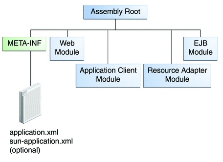

Packaging Applications
A Java EE application is delivered in a Java Archive (JAR) file, a Web Archive (WAR) file, or an Enterprise Archive (EAR) file. A WAR or EAR file is a standard JAR (.jar) file with a .war or .ear extension. Using JAR, WAR, and EAR files and modules makes it possible to assemble a number of different Java EE applications using some of the same components. No extra coding is needed; it is only a matter of assembling (or packaging) various Java EE modules into Java EE JAR, WAR, or EAR files.
An EAR file (see Figure 1-6) contains Java EE modules and, optionally, deployment descriptors. A deployment descriptor, an XML document with an .xml extension, describes the deployment settings of an application, a module, or a component. Because deployment descriptor information is declarative, it can be changed without the need to modify the source code. At runtime, the Java EE server reads the deployment descriptor and acts upon the application, module, or component accordingly.
Figure 1-6 EAR File Structure
The two types of deployment descriptors are Java EE and runtime. A Java EE deployment descriptor is defined by a Java EE specification and can be used to configure deployment settings on any Java EE compliant implementation. A runtime deployment descriptor is used to configure Java EE implementation-specific parameters. For example, the GlassFish Server runtime deployment descriptor contains such information as the context root of a web application, as well as GlassFish Server implementation-specific parameters, such as caching directives. The GlassFish Server runtime deployment descriptors are named sun-moduleType.xml and are located in the same META-INF directory as the Java EE deployment descriptor.
A Java EE module consists of one or more Java EE components for the same container type and, optionally, one component deployment descriptor of that type. An enterprise bean module deployment descriptor, for example, declares transaction attributes and security authorizations for an enterprise bean. A Java EE module can be deployed as a stand-alone module.
Java EE modules are of the following types:
EJB modules, which contain class files for enterprise beans and an EJB deployment descriptor. EJB modules are packaged as JAR files with a .jar extension.
Web modules, which contain servlet class files, web files, supporting class files, GIF and HTML files, and a web application deployment descriptor. Web modules are packaged as JAR files with a .war (web archive) extension.
Application client modules, which contain class files and an application client deployment descriptor. Application client modules are packaged as JAR files with a .jar extension.
Resource adapter modules, which contain all Java interfaces, classes, native libraries, and other documentation, along with the resource adapter deployment descriptor. Together, these implement the Connector architecture (see Java EE Connector Architecture) for a particular EIS. Resource adapter modules are packaged as JAR files with an .rar (resource adapter archive) extension.